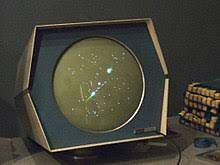

Desde aqui es donde comenzamos con su larga historia, durante este periodo de 20 años se establecieron las bases que sentaron esta gran industria de entretenimiento como de negocio.
1958- Se desarrollo Tennis for Two, uno de los primeros videojuegos creado por William Higinbotham.


1962- Steve Russell y sus colegas del Instituto de Tecnología de Massachusetts crearon Spacewar!, uno de los primeros juegos de computadora.



1972- Atari lanzó Pong, que se convirtió en uno de los primeros videojuegos comerciales exitosos, iniciando la era de los juegos arcade.